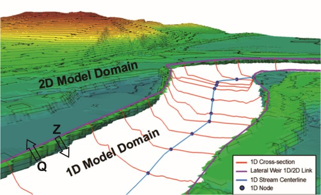

Projects - Mounika Manne
NIRVANA 2.0 Project - Clearwater Dynamics Pvt. Ltd. (Completed)
Role: GIS & Water Resources Engineer
Responsibilities:
- Watershed delineation using DEM in PCSWMM.
- Conducted flood analysis for 50-year and 100-year design storms using 1D and 2D models.
- Designed storm systems based on calculated runoff parameters.

Jeevan Mission (Government Project - Completed)
Role: GIS & Water Resources Engineer
Responsibilities:
- Surge analysis for pipe networks in various villages using SAP2.
- Automated generation of reports for multiple villages using Python.
- Processed bulk file conversions to streamline report submissions.
Water Systems Project (US Project - Completed)
Role: GIS & Water Resources Engineer
Responsibilities:
- Extraction of rainfall and temperature data using Google Earth Engine.
- Creation of dashboards using Power BI to visualize data insights.
Ph.D. Research (2016-2024)
Title: "Investigations on Mangrove Dynamics, Phenology, and Gross Primary Productivity (GPP) Estimations using Satellite-derived Parameters"
Responsibilities:
- Developed a method for estimating mangrove phenology metrics combining climate data and vegetation indices.
- Modeled GPP using satellite-derived optical and climatic data.
- Created wetland maps and performed LULC classification for the Sundarbans mangrove forest.
- Conducted hydrological modeling and estimated the phenological parameters of mangroves using advanced analytical methods.
M.Tech Dissertation (2013-2015)
Title: "Determination and Analysis of Missing Meteorological Data"
Responsibilities:
- Collected rainfall data from 2001 to 2005 for the Limkheda rain gauge in the Panam catchment area.
- Deliberately hid 5% and 10% of the rainfall data to evaluate different methods for filling in missing data.
- Applied five statistical methods (i.e., series mean, mean of nearby points, median of nearby points, linear interpolation, and linear trend at point methods) in SPSS software to estimate the hidden rainfall values
- Analyzed the accuracy of the methods by comparing the estimated data with the hidden data.
- Identified the most accurate method for replacing missing meteorological data based on the RMSE analysis.
B.Tech Major Project (2013)
Title: "Design of Residential Apartment"
Responsibilities:
- Analyzed and designed a five-storied residential apartment using STRUDS software.
- Presented design reports for slabs, beams, columns, and footings.